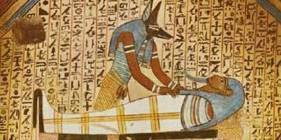
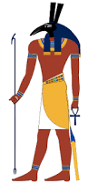
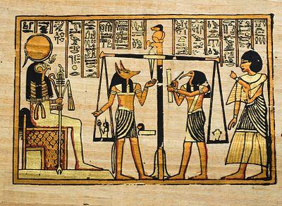

Egipæani su vjerovali u život poslije smrti. To vjerovanje potjeèe iz sage o Izidi i Ozirisu. Oni su vladali Egiptom na poèetku. Njihov brat Set bio je ljubomoran na njih, pa je skovao urotu. Postoje tri inaèice mita o tome kako se Set riješio Ozirisa - prva kaže da se pretvorio u krokodila, druga da se pretvorio u vodenkonja, a treæa, Plutarhova verzija, kaže da je Oziris žrtva urote. Set je ubio Ozirisa, i nastala je smrt. Anubis i Izida su ipak oživjeli Ozirisa, koji je postao vladar carstva mrtvih. Kad bi èovjek umro, njegova bi duša došla u podzemlje - Duat, gdje bi mu se sudilo. Duši bi postavili mnoga pitanja i naveli grijehe.

Anubis bi stajao kraj vage i motrio srce i pero koje simbolizira Ma'at, božicu pravde i istine. Ako bi duša prošla, Thoth bi to zabilježio, a Horus bi dušu odveo Ozirisu, do kojeg su stajale Izida i Neftis. Pokojnik bi uživao u pogrebnom životu, a mogao se pridružiti posadi Ra, koji je svakog dana putovao nebom donoseæi ljudima svjetlost i toplinu. Postojale su posebne Knjige mrtvih i èarolije koje su sveæenici èitali pri izvoðenju obreda. Pokojnika bi mumificirali i položili u grobnicu.
Vladar pustinje, Set
Anubis promatra vagu